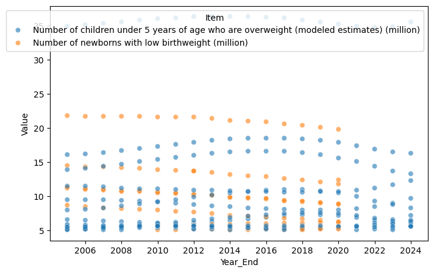
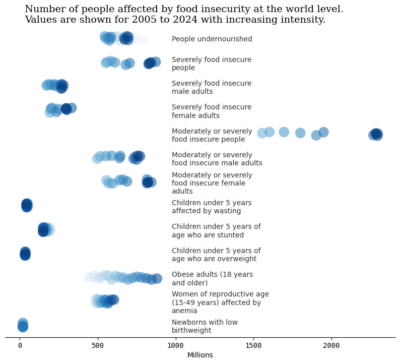

import pandas as pd
import matplotlib.pyplot as plt
import seaborn as sns
import textwrapTidyTuesday dataset of October 14, 2025
food_security = pd.read_csv('https://raw.githubusercontent.com/rfordatascience/tidytuesday/main/data/2025/2025-10-14/food_security.csv')food_security| Year_Start | Year_End | Area | Item | Unit | Value | CI_Lower | CI_Upper | Flag | Note | |
|---|---|---|---|---|---|---|---|---|---|---|
| 0 | 2005 | 2007 | Afghanistan | Average dietary energy supply adequacy (percen... | % | 97.0 | NaN | NaN | Estimated value | NaN |
| 1 | 2006 | 2008 | Afghanistan | Average dietary energy supply adequacy (percen... | % | 99.0 | NaN | NaN | Estimated value | NaN |
| 2 | 2007 | 2009 | Afghanistan | Average dietary energy supply adequacy (percen... | % | 102.0 | NaN | NaN | Estimated value | NaN |
| 3 | 2008 | 2010 | Afghanistan | Average dietary energy supply adequacy (percen... | % | 104.0 | NaN | NaN | Estimated value | NaN |
| 4 | 2009 | 2011 | Afghanistan | Average dietary energy supply adequacy (percen... | % | 105.0 | NaN | NaN | Estimated value | NaN |
| ... | ... | ... | ... | ... | ... | ... | ... | ... | ... | ... |
| 171227 | 2016 | 2018 | Upper-middle-income economies | Average fat supply (g/cap/day) (3-year average) | g/cap/d | 89.1 | NaN | NaN | Estimated value | NaN |
| 171228 | 2017 | 2019 | Upper-middle-income economies | Average fat supply (g/cap/day) (3-year average) | g/cap/d | 90.8 | NaN | NaN | Estimated value | NaN |
| 171229 | 2018 | 2020 | Upper-middle-income economies | Average fat supply (g/cap/day) (3-year average) | g/cap/d | 92.5 | NaN | NaN | Estimated value | NaN |
| 171230 | 2019 | 2021 | Upper-middle-income economies | Average fat supply (g/cap/day) (3-year average) | g/cap/d | 95.0 | NaN | NaN | Estimated value | NaN |
| 171231 | 2020 | 2022 | Upper-middle-income economies | Average fat supply (g/cap/day) (3-year average) | g/cap/d | 96.5 | NaN | NaN | Estimated value | NaN |
171232 rows × 10 columns
food_security = food_security.assign(Year_Start = pd.to_datetime(food_security['Year_Start'], format='%Y'),
Year_End = pd.to_datetime(food_security['Year_End'], format='%Y'))food_security_nona = food_security[food_security['Value'].notna()]
food_security_nona_mod = food_security_nona[(food_security_nona['Item'] == 'Number of children under 5 years of age who are overweight (modeled estimates) (million)') \
| (food_security_nona['Item']=='Number of newborns with low birthweight (million)')]food_security_nona_mod2 = food_security_nona_mod[food_security_nona_mod['Value']>5]
food_security_nona_mod2| Year_Start | Year_End | Area | Item | Unit | Value | CI_Lower | CI_Upper | Flag | Note | |
|---|---|---|---|---|---|---|---|---|---|---|
| 24188 | 2005-01-01 | 2005-01-01 | China | Number of children under 5 years of age who ar... | million No | 5.2 | NaN | NaN | Figure from external organization | NaN |
| 24189 | 2006-01-01 | 2006-01-01 | China | Number of children under 5 years of age who ar... | million No | 5.2 | NaN | NaN | Figure from external organization | NaN |
| 24190 | 2007-01-01 | 2007-01-01 | China | Number of children under 5 years of age who ar... | million No | 5.3 | NaN | NaN | Figure from external organization | NaN |
| 24191 | 2008-01-01 | 2008-01-01 | China | Number of children under 5 years of age who ar... | million No | 5.4 | NaN | NaN | Figure from external organization | NaN |
| 24192 | 2009-01-01 | 2009-01-01 | China | Number of children under 5 years of age who ar... | million No | 5.5 | NaN | NaN | Figure from external organization | NaN |
| ... | ... | ... | ... | ... | ... | ... | ... | ... | ... | ... |
| 171123 | 2020-01-01 | 2020-01-01 | Upper-middle-income economies | Number of children under 5 years of age who ar... | million No | 15.6 | NaN | NaN | Figure from external organization | Based on FY 2025 classification |
| 171124 | 2021-01-01 | 2021-01-01 | Upper-middle-income economies | Number of children under 5 years of age who ar... | million No | 15.1 | NaN | NaN | Figure from external organization | Based on FY 2025 classification |
| 171125 | 2022-01-01 | 2022-01-01 | Upper-middle-income economies | Number of children under 5 years of age who ar... | million No | 14.4 | NaN | NaN | Figure from external organization | Based on FY 2025 classification |
| 171126 | 2023-01-01 | 2023-01-01 | Upper-middle-income economies | Number of children under 5 years of age who ar... | million No | 13.7 | NaN | NaN | Figure from external organization | Based on FY 2025 classification |
| 171127 | 2024-01-01 | 2024-01-01 | Upper-middle-income economies | Number of children under 5 years of age who ar... | million No | 13.3 | NaN | NaN | Figure from external organization | Based on FY 2025 classification |
374 rows × 10 columns
fig,ax = plt.subplots(figsize=(8,5))
sns.scatterplot(data=food_security_nona_mod2, x='Year_End', y='Value', hue='Item', alpha=0.6)
items_mi = [x for x in food_security['Item'].unique() if 'million' in x]
items_mi = [x for x in items_mi if 'average' not in x]
items_mi = [x for x in items_mi if x is not None]
print(len(items_mi))
items_mi13['Number of children under 5 years affected by wasting (million)',
'Number of children under 5 years of age who are stunted (modeled estimates) (million)',
'Number of children under 5 years of age who are overweight (modeled estimates) (million)',
'Number of obese adults (18 years and older) (million)',
'Number of women of reproductive age (15-49 years) affected by anemia (million)',
'Number of newborns with low birthweight (million)',
'Number of people undernourished (million) (annual value)',
'Number of severely food insecure people (million) (annual value)',
'Number of severely food insecure male adults (million) (annual value)',
'Number of severely food insecure female adults (million) (annual value)',
'Number of moderately or severely food insecure people (million) (annual value)',
'Number of moderately or severely food insecure male adults (million) (annual value)',
'Number of moderately or severely food insecure female adults (million) (annual value)']df_world = food_security_nona[food_security_nona['Area']=='World'][food_security_nona['Item'].isin(items_mi)]
df_world| Year_Start | Year_End | Area | Item | Unit | Value | CI_Lower | CI_Upper | Flag | Note | |
|---|---|---|---|---|---|---|---|---|---|---|
| 132089 | 2005-01-01 | 2005-01-01 | World | Number of people undernourished (million) (ann... | million No | 788.8 | NaN | NaN | Estimated value | NaN |
| 132090 | 2006-01-01 | 2006-01-01 | World | Number of people undernourished (million) (ann... | million No | 733.8 | NaN | NaN | Estimated value | NaN |
| 132091 | 2007-01-01 | 2007-01-01 | World | Number of people undernourished (million) (ann... | million No | 672.9 | NaN | NaN | Estimated value | NaN |
| 132092 | 2008-01-01 | 2008-01-01 | World | Number of people undernourished (million) (ann... | million No | 639.7 | NaN | NaN | Estimated value | NaN |
| 132093 | 2009-01-01 | 2009-01-01 | World | Number of people undernourished (million) (ann... | million No | 630.1 | NaN | NaN | Estimated value | NaN |
| ... | ... | ... | ... | ... | ... | ... | ... | ... | ... | ... |
| 132781 | 2016-01-01 | 2016-01-01 | World | Number of newborns with low birthweight (million) | million No | 20.9 | NaN | NaN | Figure from external organization | NaN |
| 132782 | 2017-01-01 | 2017-01-01 | World | Number of newborns with low birthweight (million) | million No | 20.6 | NaN | NaN | Figure from external organization | NaN |
| 132783 | 2018-01-01 | 2018-01-01 | World | Number of newborns with low birthweight (million) | million No | 20.4 | NaN | NaN | Figure from external organization | NaN |
| 132784 | 2019-01-01 | 2019-01-01 | World | Number of newborns with low birthweight (million) | million No | 20.1 | NaN | NaN | Figure from external organization | NaN |
| 132785 | 2020-01-01 | 2020-01-01 | World | Number of newborns with low birthweight (million) | million No | 19.8 | NaN | NaN | Figure from external organization | NaN |
199 rows × 10 columns
df_world['Item_mod'] = df_world['Item'].str.split('\(m').str[0].str.split('Number of ').str[1].str.capitalize()
df_world| Year_Start | Year_End | Area | Item | Unit | Value | CI_Lower | CI_Upper | Flag | Note | Item_mod | |
|---|---|---|---|---|---|---|---|---|---|---|---|
| 132089 | 2005-01-01 | 2005-01-01 | World | Number of people undernourished (million) (ann... | million No | 788.8 | NaN | NaN | Estimated value | NaN | People undernourished |
| 132090 | 2006-01-01 | 2006-01-01 | World | Number of people undernourished (million) (ann... | million No | 733.8 | NaN | NaN | Estimated value | NaN | People undernourished |
| 132091 | 2007-01-01 | 2007-01-01 | World | Number of people undernourished (million) (ann... | million No | 672.9 | NaN | NaN | Estimated value | NaN | People undernourished |
| 132092 | 2008-01-01 | 2008-01-01 | World | Number of people undernourished (million) (ann... | million No | 639.7 | NaN | NaN | Estimated value | NaN | People undernourished |
| 132093 | 2009-01-01 | 2009-01-01 | World | Number of people undernourished (million) (ann... | million No | 630.1 | NaN | NaN | Estimated value | NaN | People undernourished |
| ... | ... | ... | ... | ... | ... | ... | ... | ... | ... | ... | ... |
| 132781 | 2016-01-01 | 2016-01-01 | World | Number of newborns with low birthweight (million) | million No | 20.9 | NaN | NaN | Figure from external organization | NaN | Newborns with low birthweight |
| 132782 | 2017-01-01 | 2017-01-01 | World | Number of newborns with low birthweight (million) | million No | 20.6 | NaN | NaN | Figure from external organization | NaN | Newborns with low birthweight |
| 132783 | 2018-01-01 | 2018-01-01 | World | Number of newborns with low birthweight (million) | million No | 20.4 | NaN | NaN | Figure from external organization | NaN | Newborns with low birthweight |
| 132784 | 2019-01-01 | 2019-01-01 | World | Number of newborns with low birthweight (million) | million No | 20.1 | NaN | NaN | Figure from external organization | NaN | Newborns with low birthweight |
| 132785 | 2020-01-01 | 2020-01-01 | World | Number of newborns with low birthweight (million) | million No | 19.8 | NaN | NaN | Figure from external organization | NaN | Newborns with low birthweight |
199 rows × 11 columns
fig,ax = plt.subplots(figsize=(10,8))
sns.stripplot(data=df_world, x='Value', y='Item_mod',hue='Year_End', size=15,\
alpha=0.6, legend=False, palette='Blues')
ax.yaxis.tick_right()
ax.tick_params(axis='y', which='major', pad=-320)
ax.tick_params(axis='y', length=0)
plt.xlabel("Millions")
plt.ylabel("")
title="Number of people affected by food insecurity at the world level.\nValues are shown for 2005 to 2024 with increasing intensity."
#title_wrapped = textwrap.fill(title, width=65)
plt.title(title, family='Serif', fontsize=14, ha='left', x=0.05)
sns.despine(left=True)
labels = ax.get_yticklabels()
wrapped_labels = []
for label in labels:
original_text = label.get_text()
wrapped_text = textwrap.fill(original_text, width=25) # Adjust width as needed
wrapped_labels.append(wrapped_text)
ax.set_yticklabels(wrapped_labels, color='#333333')
ax.set_xticklabels([int(x) for x in ax.get_xticks()], family='monospace')
plt.savefig('world_food.png', dpi=300, bbox_inches='tight')
plt.show()
df_world.describe()| Year_Start | Year_End | Value | CI_Lower | CI_Upper | |
|---|---|---|---|---|---|
| count | 199 | 199 | 199.000000 | 66.000000 | 66.000000 |
| mean | 2015-09-11 09:46:07.839195904 | 2015-09-11 09:46:07.839195904 | 451.684925 | 738.501515 | 783.675758 |
| min | 2005-01-01 00:00:00 | 2005-01-01 00:00:00 | 19.800000 | 160.100000 | 185.700000 |
| 25% | 2012-01-01 00:00:00 | 2012-01-01 00:00:00 | 51.350000 | 273.875000 | 295.175000 |
| 50% | 2016-01-01 00:00:00 | 2016-01-01 00:00:00 | 457.700000 | 599.650000 | 650.300000 |
| 75% | 2020-01-01 00:00:00 | 2020-01-01 00:00:00 | 639.750000 | 806.125000 | 847.150000 |
| max | 2024-01-01 00:00:00 | 2024-01-01 00:00:00 | 2296.600000 | 2260.900000 | 2332.400000 |
| std | NaN | NaN | 468.873860 | 598.928099 | 620.089332 |